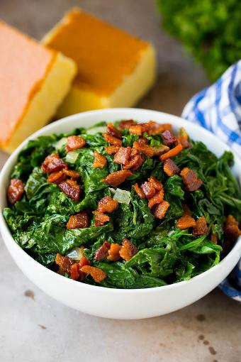

Back to Homepage
Mustard Greens

Description
These Southern style mustard greens are cooked with smoky bacon and seasonings until tender and flavorful.
Ingredients
- 6 slices bacon coarsely chopped
- 1/2 cup onion coarsely chopped
- 1 1/2 teaspoons garlic minced
- 3/4 teaspoon kosher salt
- 1/2 teaspoon black pepper
- 1 pound mustard greens cleaned, stems removed, and cut into 1 inch pieces
- 1 cup chicken broth
- 1 teaspoon sugar
- 1/4 teaspoon hot sauce or more to taste
- 1/2 teaspoon apple cider vinegar
Instructions
- Place the bacon in a large pot over medium high heat. Cook for 5-6 minutes or until crisp. Remove half the bacon from the pan and reserve for later use
- Add the onion to the pan and cook for 4-5 minutes or until softened. Add the garlic, salt and pepper, then cook for 30 seconds
- Add the greens to the pot and cook for 2-3 minutes or until wilted. Pour in the chicken broth and sugar, then bring to a simmer
- Reduce the heat to low, then cover the pot and simmer for 30 minutes or until greens are tender. Uncover and stir in the hot sauce and vinegar. Cook for an additional 2-3 minutes
- Sprinkle with reserved bacon, then serve immediately
Back to Homepage